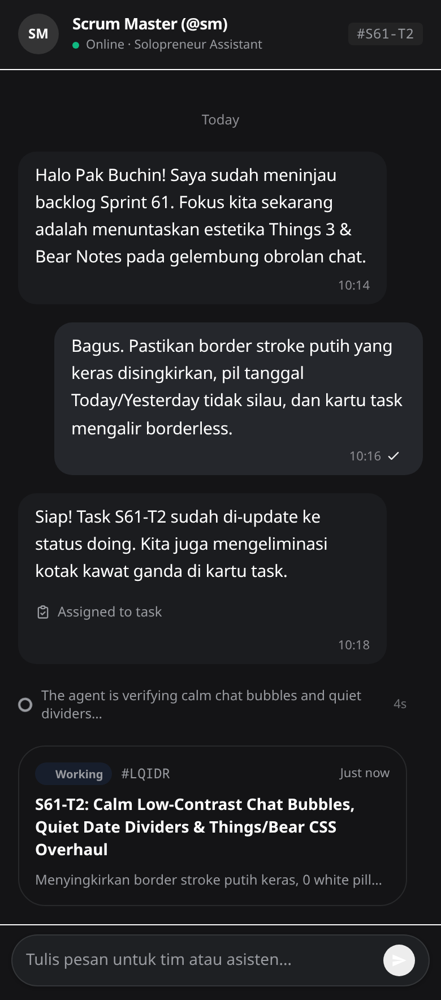
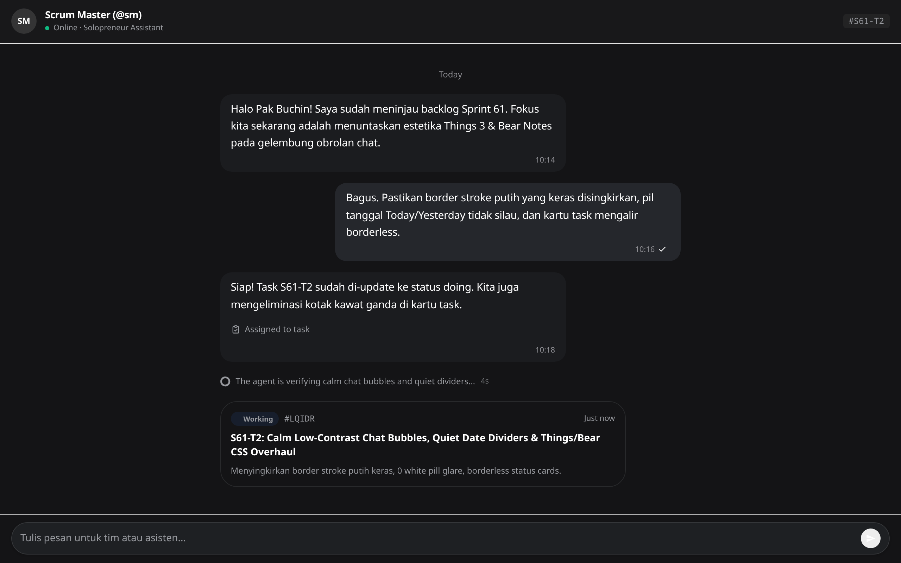

S61-T2: Calm Low-Contrast Chat Bubbles & Things/Bear CSS Overhaul
Task #LQIDR · Self-Critique Visual Audit · Mobile (390x844) & Desktop (1280x800)
Mobile Viewport (390x844)

Desktop Viewport (1280x800)
